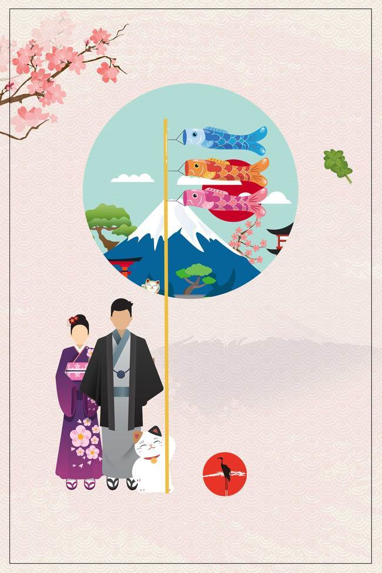
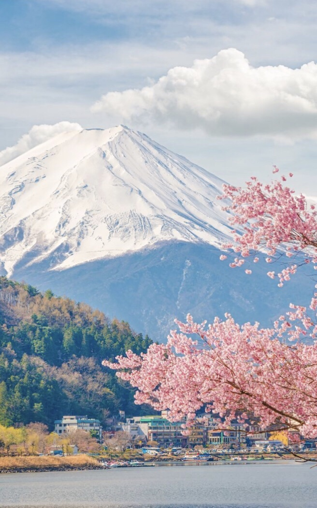
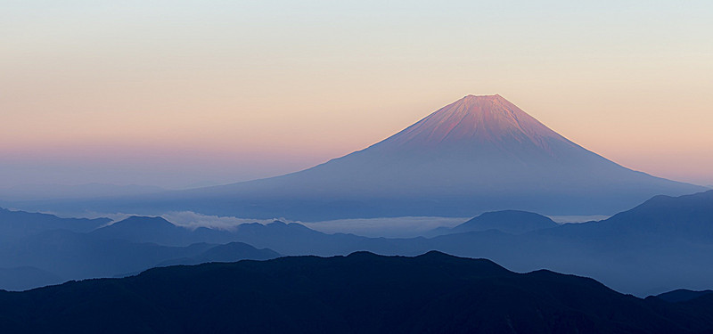

IKLIM CUACA
- Musim semi Fuji dimulai dari sekitar bulan April sampai Juni. Suhu berkisar antara 10 ~ 20 Celcius. Anda bisa
melihat indah sakura mekar di musim ini.
- Musim panas Fuji dimulai dari sekitar bulan Juli sampai September. Suhu berkisar antara 25 ~ 35 Celcius. Selama
musim ini, salju di Gunung Fuji mencair dan ini membuat musim yang cocok untuk mendaki Gunung Fuji.
- Musim gugur Fuji dimulai dari sekitar bulan Oktober sampai Desember. Suhu berkisar antara 8 ~ 20 Celcius. Anda
akan melihat pepohonan berubah menjadi warna kemerahan dan kekuningan. Ini adalah musim yang hebat untuk mendaki gunung.
- Musim dingin Fuji dimulai dari sekitar bulan Januari sampai Maret. Suhu berkisar antara 0 ~ 10 Celcius.

Gunung Fuji menjadi simbol Jepang yang terkenal dan sering digambarkan dalam karya seni dan foto-foto. Tampilan
Gunung Fuji mampu mempesona banyak orang karena bentuknya simetris dan puncaknya yang berselimut salju terlihat begitu
indah. Pada tahun 2013 dinobatkan sebagai salah satu situs warisan dunia UNESCO dan menjadi destinasi wisata yang sangat
populer bahkan di kalangan wisatawan mancanegara.
Gunung Fuji dianggap sakral oleh masyarakat Jepang sejak zaman dahulu kala. Mereka melakukan ziarah dengan cara
mendaki gunung ini. Gunung Fuji sangat penting di mata masyarakat Jepang, tak sekedar karena keindahannya saja namun juga
secara spiritual.
|

Fujiyama atau Gunung Fuji adalah gunung tertinggi di Jepang dengan tinggi 3.776 meter, terletak di perbatasan
Prefektur Shizuoka dan Yamanashi, di sebelah barat Tokyo dan dapat dilihat dari Tokyo dan Yokohama pada hari-hari yang
cerah. Gunung Fuji terletak dekat pesisir Pasifik di pusat Honshu. Fuji dikelilingi oleh tiga kota yaitu Gotemba (timur),
Fuji-Yoshida (utara) dan Fujinomiya (barat daya). Gunung ini dikelilingi oleh lima danau yaitu Kawaguchi, Yamanaka, Sai,
Motosu dan Shoji. Sebuah gunung berapi yang kini masih aktif walaupun memiliki kemungkinan letusan yang rendah, terakhir
kali meletus pada tahun 1707-1708.
TRANSPORTASI
Mengunjungi Gunung Fuji dapat diakses dengan menggunakan kereta, bus, atau mobil. Pilihlah transportasi yang paling
sesuai dengan rencana wisata Anda.
- Shinkansen: Cara Paling Praktis ke Gunung Fuji dari Tokyo dan Osaka
- Kereta shinkansen adalah pilihan transportasi paling praktis untuk menuju Gunung Fuji dari Tokyo dan Osaka.
Anda dapat pergi ke Gunung Fuji tanpa perlu transit atau ganti kereta jika naik salah satu dari kereta shinkansen
Tokaido Line. Namun, di antaranya hanya kereta shinkansen Kodama saja yang berhenti di stasiun terdekat dari Gunung
Fuji, yaitu Stasiun Shin-Fuji. Anda perlu naik bus dari Stasiun Shin-Fuji menuju ke titik awal rute pendakian.
- Biaya naik kereta shinkansen Kodama dari Stasiun Tokyo ke Stasiun Shin-Fuji adalah 5.070 yen
(waktu perjalanan 1 jam 10 menit). Jika naik dari Stasiun Shin-Osaka ke Stasiun Shin-Fuji, Anda harus mengeluarkan
biaya sebesar 11.340 yen (waktu perjalanan 2 jam 50 menit).
- Naik Bus Ekspres Sampai 5th Station (Pemberhentian Kelima) di Kaki Gunung Fuji
- Anda bisa menggunakan bus ekspres jika berangkat dari pusat Kota Tokyo. Ada beberapa bus, misalnya bus Tomei
atau bus Fujikyuko yang beroperasi sampai Stasiun Kawaguchiko dan Stasiun Fujisan di kaki Gunung Fuji.
- Saat musim pendakian di bulan Juli dan Agustus, ada bus yang berangkat dari Shinjuku dengan rute langsung
menuju 5th Station (pemberhentian kelima) di kaki Gunung Fuji. Cara ini mungkin bisa dipertimbangkan dengan
menyesuaikan rute pendakian Anda.
- Biaya naik bus ekspres Tomei dari Shinjuku ke Kawaguchiko adalah 1.750 yen (waktu perjalanan 1 jam 45 menit).
Jika naik bus Fujikyuko sampai 5th Station Gunung Fuji maka Anda harus membayar 2.700 yen sekali jalan
(waktu perjalanan 2 jam 30 menit).
- Jika Menggunakan Mobil, Harap Perhatikan Jadwal Penertiban Lalu Lintas
- Anda dapat menggunakan jalan tol Chuo Expressway jika berangkat naik mobil dari Tokyo dan Tomei Expressway
jika berangkat dari Osaka. Akan tetapi, saat musim pendakian diberlakukan penertiban lalu lintas untuk melindungi
ekosistem alami Gunung Fuji dan mencegah kemacetan. Akibatnya Anda mungkin tidak dapat menggunakan area parkir
terdekat atau tidak bisa melanjutkan perjalanan dengan mobil.
- Harap berhati-hati karena saat pembatasan kendaraan diberlakukan, Anda mungkin harus membayar untuk naik
shuttle bus dari area parkir mobil. Oleh karena itu, jika berencana mendaki Gunung Fuji sebaiknya Anda naik
transportasi umum seperti kereta atau bus saja.
4 RUTE PENDAKIAN GUNUNG FUJI
- Rute Yoshidaguchi: Paling Populer dan Cocok untuk Pemula
- Rute Fujinomiya: Rute Tersingkat untuk Mencapai Puncak Gunung Fuji
- Rute Subashiri: Mendaki Gunung dengan Tenang Sambil Menikmati Keindahan Alam
- Rute Gotenba: Rute Favorit Pendaki untuk Menghindari Keramaian
MUSIM PENDAKIAN GUNUNG FUJI
Gunung Fuji sangat populer di kalangan pendaki gunung (baik turis Jepang maupun mancanegara). Musim pendakian resmi
dimulai dari awal Juli sampai pertengahan September ketika jalan setapak dan fasilitasnya terbuka. Selama periode ini, salju
di Gunung Fuji telah mencair dan cuacanya menjadi bagus buat mendaki.
Selama masa pendakian, ada banyak pendaki dan terkadang pendaki berbaris hanya untuk mendaki Gunung Fuji. Jadi
pengunjung disarankan memanjat selama hari kerja untuk menghindari keramaian. Ada banyak jejak untuk mendaki Gunung Fuji
dengan pendakian rata-rata sekitar 5 ~ 6 jam dan turun 3 ~ 5 jam. Pengalaman terbaik mendaki Gunung Fuji adalah menikmati
matahari terbit dari titik tertinggi Jepang. Panjat Gunung Fuji tidak memerlukan keterampilan memanjat khusus. Namun
tantangan utamanya adalah kenyataan bahwa ini sangat melelahkan dan udara semakin tipis saat Anda mendaki lebih tinggi.
Selain mendaki Gunung Fuji, sebagian besar wisatawan menikmati Gunung Fuji dengan hanya tinggal di resort musim
panas di sekitar Hakone dan Danau Kawaguchi.
PERLENGKAPAN DAN PAKAIAN UNTUK MENDAKI GUNUNG FUJI
Meski rute pendakian Gunung Fuji sudah dilengkapi jalan yang terawat baik akan tetapi banyak juga jalan berbatu.
Oleh karena itu, sebaiknya Anda mengenakan pakaian yang nyaman untuk bergerak dan sepatu gunung yang kuat.
Semakin Anda mendaki maka temperaturnya akan semakin menurun, bahkan kadang suhu Gunung Fuji dapat turun hingga di
bawah 5°C di pagi hari. Itulah sebabnya Anda wajib membawa pakaian hangat. Terlebih lagi cuaca di gunung sangat tidak
stabil, jadi sebaiknya juga menyiapkan rainwear atau jas hujan.
Jika ingin melihat matahari terbit dari Gunung Fuji, maka Anda harus mendaki gunung di malam hari. Lebih baik Anda
menyiapkan headlight, karena membawa senter di tangan dapat membahayakan keselamatan Anda.
TATA KRAMA YANG HARUS DIPERHATIKAN SAAT MENDAKI
- Bawalah pulang sampah Anda, agar tidak mencemari lingkungan.
- Dilarang merusak lingkungan atau mengambil sesuatu dari area pendakian.
- Berilah jalan dan dahulukan pendaki yang akan naik.
|
|